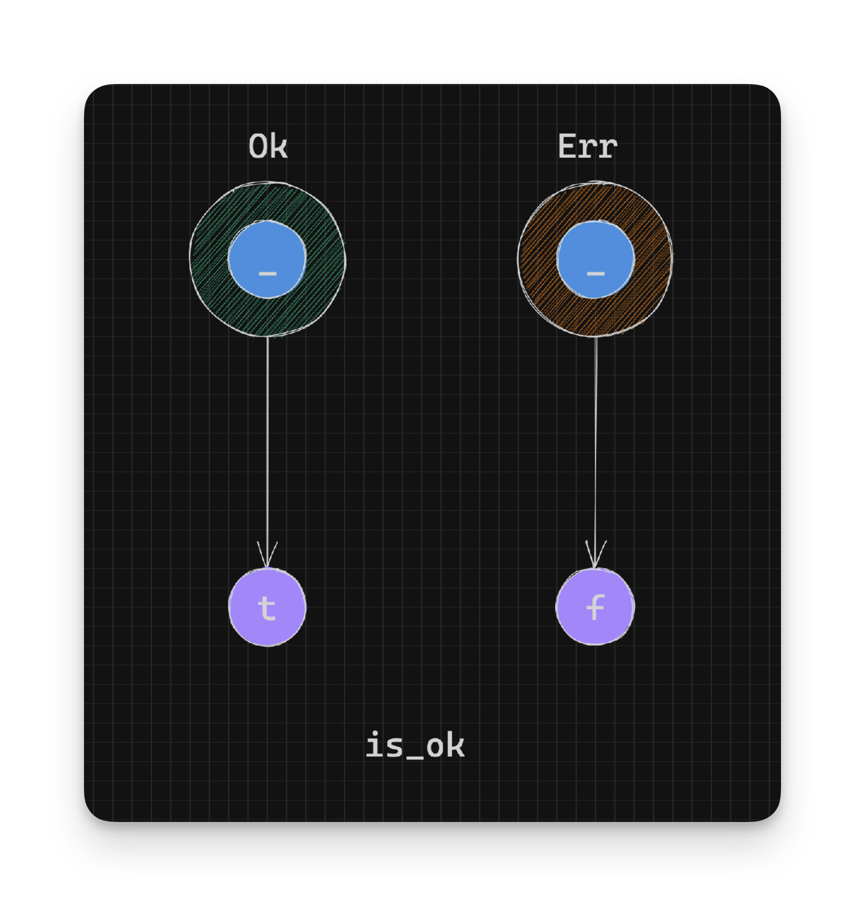
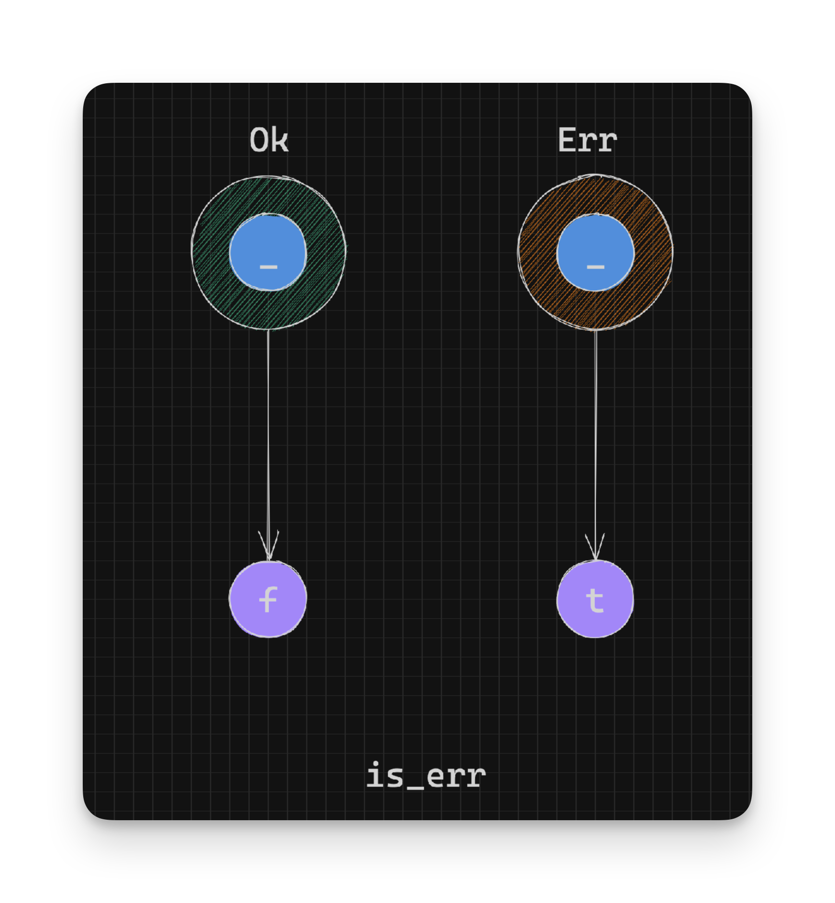
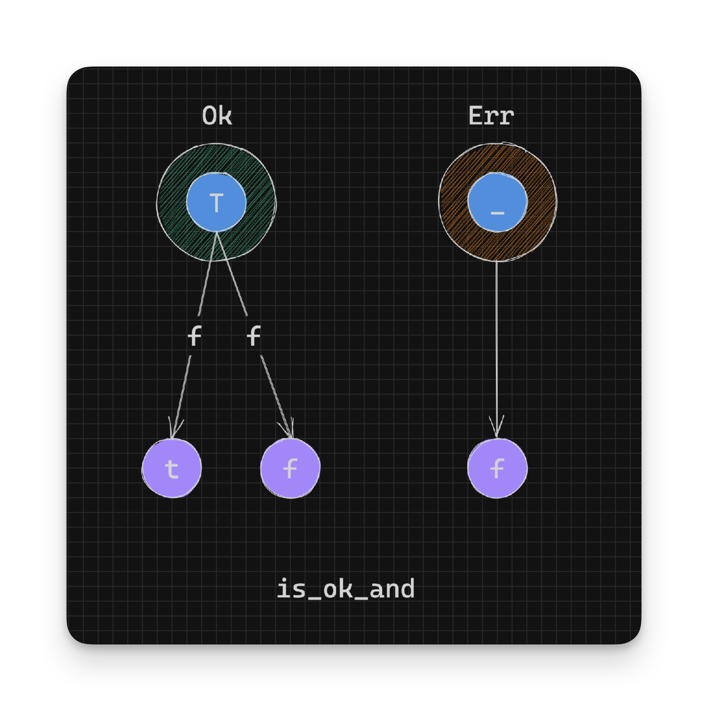
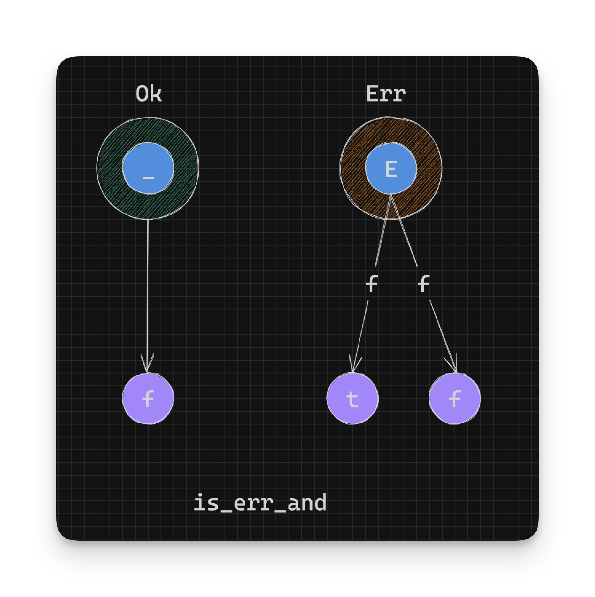

Working With Rust Result - Value Tests - Part 12
Result has some functions that let you figure out if an instance is a success or error value. We’ll look at those functions next.
is_ok
When you need to just know if some execution was successful and don’t need to know the value, you can use is_ok:
pub const fn is_ok(&self) -> bool {
matches!(*self, Ok(_))
}The matches! macro tests if a value matches a given pattern, returning a bool value to indicate success or failure.
In summary:
// pseudocode
// Given: Result<T, E>
// Return type: bool
Ok(_) -> true // bool
Err(_) -> false // bool
For example:
parse_bool("ten").is_ok(); // false
parse_bool("true").is_ok(); // trueWe could use this function when testing for conditions:
if parse_bool(value).is_ok() {
// Do something when we have booleans
} else {
// Do something when we don't have booleans
}is_err
This is similar to is_ok but in reverse:
pub const fn is_err(&self) -> bool {
!self.is_ok()
}In summary:
// pseudocode
// Given: Result<T, E>
// Return type: bool
Ok(_) -> false // bool
Err(_) -> true // bool
For example:
parse_bool("ten").is_err(); // true
parse_bool("true").is_err(); // falseIn a conditional as before:
if parse_bool(value).is_err() {
// Do something when we don't have booleans
} else {
// Do something when we have booleans
}is_ok_and
is_ok_and lets you test a Result is Ok and runs a predicate on the value inside the Ok instance. is_ok_and is defined as:
pub fn is_ok_and(self, f: impl FnOnce(T) -> bool) -> bool {
match self {
Err(_) => false,
Ok(x) => f(x),
}
}In the above definition, the predicate function f is only called on the value inside the Ok instance, converting it to a boolean value. If the Result is an instance of Err the value false is returned.
In summary:
// pseudocode
// Given: Result<T, E>
// Return type: bool
f: T -> bool
Ok(t:T) -> f(t) -> true|false // bool
Err(_) -> false // bool
A simple example is testing whether a number is greater than 10:
parse_int("11").is_ok_and(|n| n > 10) // true
parse_int("2").is_ok_and(|n| n > 10) // false
parse_int("blah").is_ok_and(|n| n > 10) // falseis_err_and
is_err_and is the opposite of is_ok_and in that it lets you test a Result is an Err and runs a predicate on the value inside the Err instance. is_err_and is defined as:
pub fn is_err_and(self, f: impl FnOnce(E) -> bool) -> bool {
match self {
Ok(_) => false,
Err(e) => f(e),
}
}In the above definition, the predicate function f is only called on the value inside the Err instance, converting it to a boolean value. If the Result is an instance of Ok the value false is returned.
In summary:
// pseudocode
// Given: Result<T, E>
// Return type: bool
f: E -> bool
Ok(_) -> false // bool
Err(e:E) -> f(e) -> true|false // bool
A simple example is to testing whether a number is an invalid digit:
parse_number("2")
.map_err(|e| MyError(e.to_string()))
.is_err_and(|MyError(error)| error.contains("invalid digit")); // false
parse_number("blah")
.map_err(|e| MyError(e.to_string()))
.is_err_and(|MyError(error)| error.contains("invalid digit")); // trueYou’re almost at the end!